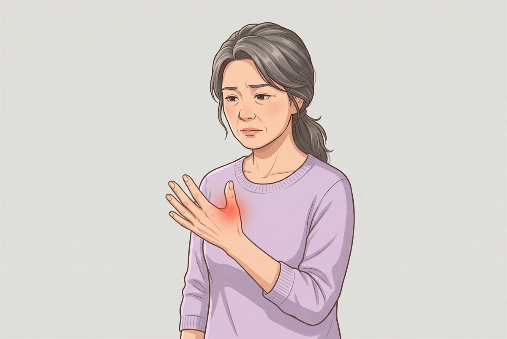
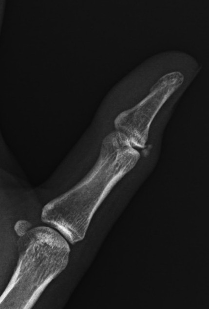

骨科衛教
手指也會長石頭？

「醫師，我這隻手是不是壞掉了？」
一位中年的家庭主婦，兩天前左手拇指開始痛，愈來愈厲害，痛到連毛巾都擰不了。她一邊說，一邊小心翼翼地把左手放在桌上，連碰都不太敢碰。
「我沒有跌倒，也沒有扭到，什麼事情都沒有發生啊。」
「那妳平常這隻手最常做什麼？擰毛巾、開瓶蓋這些多不多？」
「會啊！厝內大大小小的代誌攏是我咧做。」她說得很自然，好像那是理所當然的事。
問完病史、動手檢查過之後，我請她做了進一步的檢查。 答案就在影像上：拇指根部的關節旁邊，有一顆小小的、白白的東西——講白話一點，就是肌腱上長了一顆小石頭。

「所以我不是媽媽手？」她愣了一下，接著問出了她真正在怕的那件事：「那這顆東西是不是要開刀挖掉？我以後手還能用嗎？」
那顆石頭是什麼？
肌腱是連接肌肉跟骨頭的那條組織，本來柔韌有彈性，不該有鈣。 但在某些情況下，肌腱的局部會堆積鈣質，變成一顆硬硬的沉積物，這就是鈣化性肌腱炎。它最常發生在肩膀，手部比較少見，但確實會發生。
比較意外的是：鈣沉積下來的時候常常不太痛，有些人放了好幾年都沒感覺。 真正痛到受不了的，反而是身體開始把它清掉的時候——她那兩天的劇痛，其實是身體正在處理它的訊號。
很多人一聽到「鈣化」，第一個反應是「我是不是鈣吃太多」。 這跟你吃了多少鈣、有沒有補鈣完全無關，不必為了它把鈣片或牛奶停掉。
那要怎麼治療？
「不用開刀。」我跟她說，「這顆東西，身體自己會處理。」
她鬆了一口氣，肩膀明顯垮下來——那是聽到答案之後才敢放鬆的樣子。
急性期要做的不是把那顆石頭清光，而是把痛壓下來，讓她能正常過日子。做法通常是：
- 讓那隻手休息——必要時用護具，避免反覆刺激。
- 藥物止痛消炎——先把急性期最難熬的那幾天壓過去。
- 調整用手的方式——用開瓶器、防滑墊代替手指，改用整隻手掌施力，而不是只靠拇指跟食指去捏。
- 體外震波——發炎特別劇烈、或者痛拖得比較久的時候，用來幫忙把那段最難熬的過程縮短。
那天她帶回去的東西其實不多：幾天的藥、一個讓拇指休息的護具，還有一件我特別交代的事——這幾天先不要擰毛巾，家裡的瓶蓋，交給別人開。
「這樣就好？」她問。
這樣就好。難的不是治療，是忍住不用那隻手。
後來呢
除了藥物與休息，我也幫她安排了體外震波，把那段最難熬的發炎壓下來。 幾天之後，她的痛明顯緩解——沒有開刀，也沒有走到更侵入的處理。
回診那天她一進門就先把手舉起來給我看，轉了轉，然後說了一句：「我以為手裡長了東西，一定要挖掉。」
那句話其實才是重點。她這幾天真正在承受的，除了痛，還有那個「我的手是不是完了」的想像。 而那個想像，是在弄清楚以後才消失的。
什麼時候不要再自己觀察
手指突然又腫又痛，原因不只一種，有些不能等。 出現下面這些狀況，不要自己揉、不要熱敷，也不要讓人幫你把它「喬」開，請盡快就醫：
- 紅、腫、發熱合併發燒。
- 有傷口、被刺到或咬到之後才痛。
- 關節劇痛、皮膚發亮，尤其半夜發作。
- 手指麻、無力或發白冰冷。
- 痛持續加重、止痛藥完全壓不住。
這些狀況的外觀有時候很像，處理方式卻是相反的——例如如果是感染，揉開它、熱敷它只會讓它擴散得更快。
厝內大大小小的代誌都是妳在做，那雙手其實一直在加班。 它痛起來的時候，不一定是壞掉了，有時候只是在提醒妳：這個家的事，不必全部都用這雙手做完。
很多人拖著不來，是覺得「應該過幾天就好了」。 但真正折磨人的，往往不是那個痛，而是不知道它是什麼、會不會好、要不要開刀。
手痛拖著一直沒有改善，或者突然痛起來，就讓我們看一下。 很多時候答案沒有你想的那麼可怕，只是需要有人告訴你。
本文為一般衛教資訊，不能取代醫師的診察、診斷或治療。 文中案例已隱去可辨識資訊。每個人的狀況都不同，請與您的主治醫師討論後再決定治療方式。